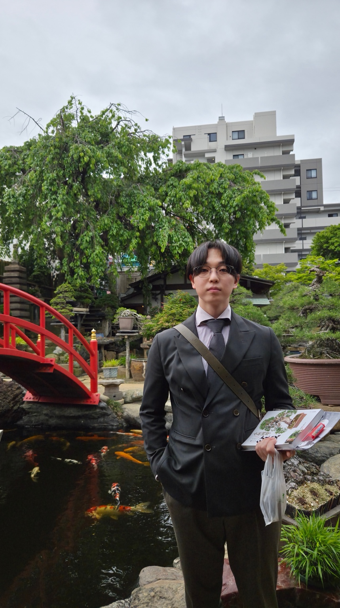

コンサルタント
デスクワークを中心に、物事を整理して考え、 課題を見つけ、解決策を考える仕事。

25歳。コンサルタントとして働きながら、 筋トレ、ファッション、コーヒー、ゲーム、AIなど、 興味を持ったことを深掘りしています。
「なんとなく」で終わらせるより、 気になったことを調べて、比較して、 自分なりの答えを見つけるのが好き。
仕事だけでなく、身体づくりや服、食事、趣味、 テクノロジーまで、日常のいろいろな部分を 少しずつ改善していくことを楽しんでいます。
情報を整理し、課題を見つけ、より良い方法を考える。 仕事でも「どうすればもっと良くできるか」を大切にしています。
デスクワークを中心に、物事を整理して考え、 課題を見つけ、解決策を考える仕事。
情報を集めるだけではなく、 「結局何が重要なのか」「どうすれば改善できるか」 まで考えることを大切にしています。
ChatGPTなどのAI、SaaS、Google Apps Script、 自動化など、新しい技術を生活や仕事に活かすことに興味があります。
「もっと簡単にできないか」 「自動化できないか」 「もっと良い方法はないか」を考えるのが好きです。
Anytime Fitnessでトレーニング。 身体を大きくするだけでなく、種目、フォーム、重量、 食事など、どうすれば効率よく成長できるかを考えるのが好き。
ガタイの良さを活かした綺麗めスタイルを研究中。 シンプルだけど、素材や色で雰囲気が出る服が好き。
コーヒーが好き。普通のコーヒーだけでなく、 バレルエイジドのような少し特徴のあるコーヒーにも興味があります。
Nintendo 64のような昔のゲームからBIOHAZARDシリーズまで。 ゲームそのものだけでなく、当時の技術やハードウェアにも興味があります。
盆栽や植物のように、時間をかけて変化していくものが好き。 自然を感じられるものにも惹かれます。
アニメや日本の歴史・文化にも興味があります。 作品だけでなく、その背景にある時代や設定まで知りたくなるタイプ。
筋肉をつけながら身体を整え、 トレーニングそのものを長く楽しめる生活を目指しています。
気になったことはそのままにせず、 「なぜ？」「結局どういうこと？」まで理解したい。
メリット・デメリット、性能、使いやすさなどを比べて、 自分に合う選択肢を探す。
一度決めたら終わりではなく、 実際に使ってみて、より良い形にアップデートしていく。
筋トレを継続して、身体づくりとトレーニングの質をさらに高める。
体型、色、素材を研究しながら、 自分らしい綺麗めスタイルを作っていく。
AIを単なる検索ツールではなく、 仕事、学習、生活改善のパートナーとして活用する。
身体、仕事、知識、趣味。 どれも一気に変えるのではなく、少しずつ積み上げていく。
気になったら調べる。
試してみる。
もっと良くする。